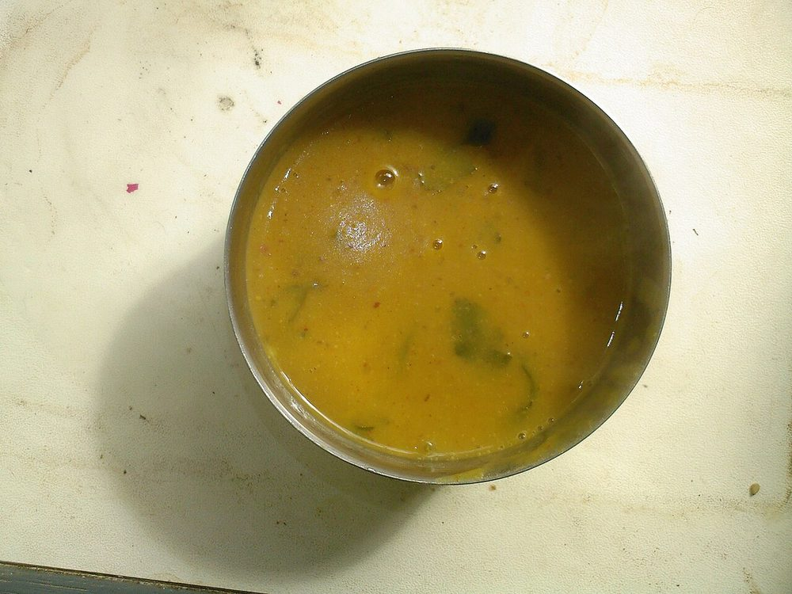

Mag ni Dal
loose split yellow moong finished with a ghee and cumin tempering, the plainest weekday dal

Contains: milk
Checked against the ingredient list for ten allergens: milk, egg, fish, crustaceans, tree nuts, peanuts, sesame, mustard, soy and gluten. Brands vary, so read the label on anything new to you.
Ingredients
Quantities for 4.
- 200g, rinsed until the water runs clear Moong Dal
- 800ml Water
- 1/2 tsp Turmeric
- to taste Salt
- 3 tbsp Ghee
- 1 tsp Cumin Seeds
- 1/4 tsp Asafoetidause compounded-free hing to keep this gluten-free
- 2, broken Dried Red Chilli
- 8 Curry Leaves
- 1 tsp, finely grated Ginger
- 2, slit Green Chilli
- 1 tbsp juice Lemon
- 1/4 tsp, coarsely cracked Black Pepperoptional
- 3 tbsp, chopped Coriander Leavesoptional
Cookware
stovetop, pressure cooker
Before you start
- Rinse the moong dal in three changes of water. The starch you wash off is what makes an unrinsed dal taste cloudy.
- Soak 20 minutes if you are cooking in an open pan; skip the soak in a pressure cooker.
- Salt goes in after the dal is soft, not before. Early salt keeps split moong from breaking down.
Method
- Put the rinsed dal, water and turmeric in a pressure cooker and cook 3 whistles, then let the pressure drop naturally. In an open pan, simmer 30-35 minutes topping up water.
- Open up and whisk the dal briefly. It should be loose enough to pour, like thin cream. Add hot water if it has tightened.Mag ni dal is meant to be thin. If a spoon stands up in it you have gone too far.
- Stir in salt, the grated ginger and the slit green chillies and simmer 5 minutes.
- Heat the ghee in a small pan until it shimmers, then add the cumin seeds and let them turn a shade darker and smell toasted.
- Add the broken dried chillies, curry leaves and asafoetida and pull the pan off the heat after 5 seconds.Five seconds. Asafoetida burns almost instantly and turns acrid.
- Pour the tempering into the dal (it should hiss) and clap the lid on for a minute to trap the aroma.
- Stir in the lemon juice and cracked pepper off the heat.Lemon after the heat is off. Boiled lemon juice goes bitter.
- Scatter with coriander and serve over plain rice with a spoon of extra ghee.
Storage
Keeps 3 days refrigerated and thickens considerably. Loosen with hot water when reheating and add a fresh squeeze of lemon; the tempering aroma does not survive a second day.
Nutrition Good estimate
Medium protein: 13 g a serving, 19% of the calories
| Per serving80 g | Per 100 g | |
|---|---|---|
| Calories | 270 kcal | 336 kcal |
| Protein | 12.6 g | 16 g |
| Carbohydrate | 33.4 g | 42 g |
| of which sugars | 3.7 g | 5 g |
| Fibre | 8.9 g | 11 g |
| Fat | 10.5 g | 13 g |
| of which saturated | 6.2 g | 8 g |
| of which unsaturated | 3.6 g | 4 g |
Ingredients given to taste count as zero, so the real figures run a little higher. Nearest database match used for asafoetida, curry leaves. Estimated from raw ingredients using USDA FoodData Central.
Times, yields, allergens and nutrition are guidance. Use your own judgement on doneness and on storing. More in About.